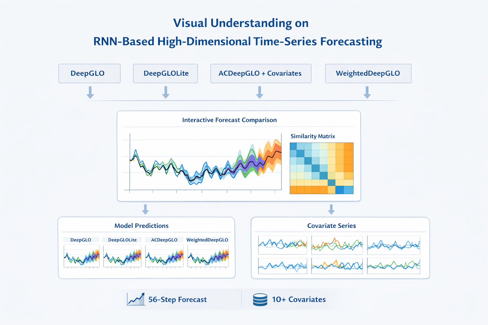

Interactive exploration of high-dimensional forecasting and inter-series similarity (React + D3 frontend, Flask backend).
Project information
- Category: Time-Series Forecasting · Data Visualization · Applied ML
- Stack: React, D3.js, Flask (Python), NumPy
- Models: DeepGLO, DeepGLOLite, ACDeepGLO (covariates), WeightedDeepGLO
- Datasets: Traffic, Electricity, PEMS, Wiki (pre-packaged)
- Forecasting: Rolling validation (τ=14, n=4) → 56-step horizon
Overview
This project is a React + Flask web application built to help users visually compare four variants of RNN-based, high-dimensional time-series forecasting inspired by the DeepGLO line of methods. It is designed for interactive, model-to-model analysis: instead of only reporting aggregate metrics, the tool makes it easy to inspect where and why a given model wins (or fails) across time and across related series.
The core idea is to combine: (1) forecasting overlays (per model), (2) an explicit view of inter-series dependence (similarity) over time, and (3) rapid iteration on dataset / settings through a single backend endpoint that trains/validates and returns predictions for visualization.
What The App Enables
- Interactive comparison of DeepGLO, DeepGLOLite, ACDeepGLO (additional covariates), and WeightedDeepGLO on the same series and time window.
- Exploration of dependence structure: the backend computes similarity (via covariance) and surfaces “most similar” series as covariates and as context plots.
- Model diagnostics by inspection: hover and click interactions make it easy to see how forecasts behave around regime changes, peaks, and discontinuities.
- Operational workflow: dataset/settings changes trigger backend recomputation so the UI always reflects the chosen modeling configuration.
End-to-End Architecture
The system is organized as a thin, interactive client with a single backend entrypoint. Pre-packaged datasets such as traffic, electricity, PEMS, wiki are used for experimentation. The Flask server slices the data to a manageable subset of series and time window by default to keep the interaction loop responsive.
- Backend (Flask): a single backend endpoint that trains/validates models, computes similarity/covariates, and returns predictions for visualization.
- Similarity: covariance-based similarity is used to select “most similar” series indices, which are displayed as covariates and as supporting plots.
- Validation: rolling validation producing a multi-step forecast horizon is used.
- Frontend (React + D3): a control panel posts configuration changes; hover updates context; click triggers backend training/prediction and then renders overlays and covariate grids.
- Experimentation: Experiments were conducted on high-dimensional benchmark datasets containing hundreds of correlated time series, allowing evaluation of how different model variants capture inter-series dependencies. ACDeepGLO and WeightedDeepGLO algorithms were evaluated against the original DeepGLO and DeepGLOLite models.
Models Compared
The app compares four forecasting variants that share the same general goal—accurate forecasts for many related series—while differing in how they handle global structure, efficiency, and covariate usage:
- DeepGLO: baseline global-local forecasting with explicit modeling of inter-series relationships.
- DeepGLOLite: a lighter-weight variant intended to reduce complexity while preserving competitive accuracy.
- ACDeepGLO: DeepGLO augmented with additional covariate series selected via similarity; designed to exploit dependence structure more directly.
- WeightedDeepGLO: introduces weighting mechanisms intended to emphasize more informative series relationships.
Key Findings
- ACDeepGLO (notably with ~10 covariates) tends to perform best on global/aggregate loss metrics when trained on the full dataset.
- WeightedDeepGLO underperformed relative to DeepGLO in the conducted experiments.
- Under batch-wise training, ACDeepGLO and DeepGLO appear more similar in performance, highlighting the importance of training protocol in comparative studies.
Why This Matters
In high-dimensional forecasting, accuracy is only part of the story: practitioners also need to understand dependency, stability over time, and failure modes. This tool turns that need into a concrete workflow—letting users inspect forecasts, compare variants, and connect errors back to inter-series structure in an interactive, visual way.